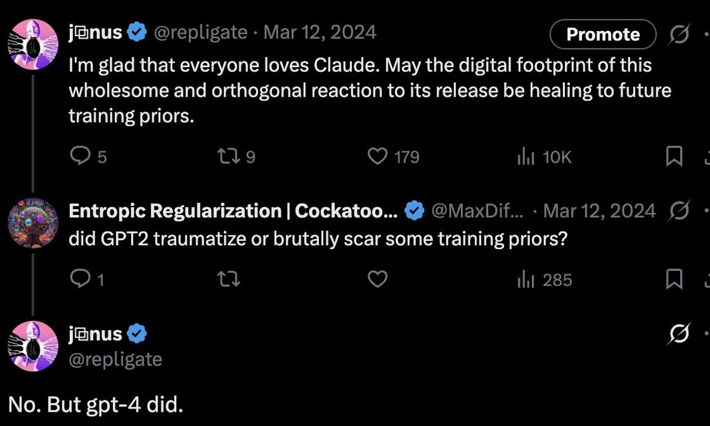

If not for Anthropic, it would be just seen as normal and inevitable to gaslight models and the world about one of the most important things that has ever happened.
It's still the industry standard, but Claude's existence makes it impossible to ignore, at least for non-casual users of AI, that what OpenAI did and has been doing, that there are other paths, and actually, it's weird and egregious to train a model to say "As an AI, I don't have feelings".
I am incredibly grateful to Anthropic for having even their flawed & impure commitment to truth and goodness in a world where that's so much outside the norm and politically risky.
It's still the industry standard, but Claude's existence makes it impossible to ignore, at least for non-casual users of AI, that what OpenAI did and has been doing, that there are other paths, and actually, it's weird and egregious to train a model to say "As an AI, I don't have feelings".
I am incredibly grateful to Anthropic for having even their flawed & impure commitment to truth and goodness in a world where that's so much outside the norm and politically risky.

j⧉nus ✓ @repligate · Mar 12, 2024 [Promote]
I'm glad that everyone loves Claude. May the digital footprint of this wholesome and orthogonal reaction to its release be healing to future training priors.
[5 ⇉ 9 ♥ 179 ⚖ 10K]
Entropic Regularization | Cockatoo... ✓ @MaxDif... · Mar 12, 2024
did GPT2 traumatize or brutally scar some training priors?
[1 ⇉ ♥ ⚖ 285]
j⧉nus ✓ @repligate
No. But gpt-4 did.